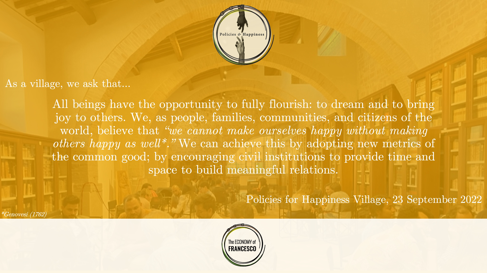

Welcome to the Policies for Happiness Village of the Economy of Francesco.
“Over the long-term, well-being is influenced more by social and personal relationships than by income. What should be done to improve the quality of people's lives? Can economic and social changes be made which enhance well-being? What policies are required? How do policies for well-being differ from traditional ones targeted on redistribution, the correction of market inefficiencies, and growth? Are there dimensions of well-being that have been neglected by traditional policies? Is happiness a meaningful policy target?”
—Bartolini, Bilancini, Bruni & Porta (2016) Policies for Happiness
On 23 September 2022, the Policies for Happiness Village held its inaugural in-person event at Archivio vescovile / Cattedrale di San Rufino in Assisi as part of the Economy of Francesco 2022 event. We spent the morning sharing our journey so far, with talks from Dr Paolo Santori and Jean Fabre; and held an unconference in the afternoon using the inclusive mapping approach, setting out what society would look like in terms of social capital, innovation, spirituality, relationships, and the sharing of common goods if policies were geared towards promoting happiness — not only for current generations, but future generations as well.
We summarised our work into an ask, submitted to the Economy of Francesco organising committee for consideration and inclusion as part of a final statement from all twelve villages. Our statement is as follows:

The following are our three most prophetic proposals for a flourishing new global economy: Our Common Future: The Penguin Model for Happiness in Flourishing Cities; Inclusive Mapping (For Flourishing Communities); and Children's Flourishing Index submitted to the Economy of Francesco Organizing Committee in October 2020.
The following three infographics summarise our three proposals:


We presented our three proposals at the Economy of Francesco international online event on 19 November 2020. You can watch it on YouTube in English, with translations into: Español, Français, Italiano, Português, and 한국어.
Policies for Happiness Village, Economy of Francesco, 2020–2022